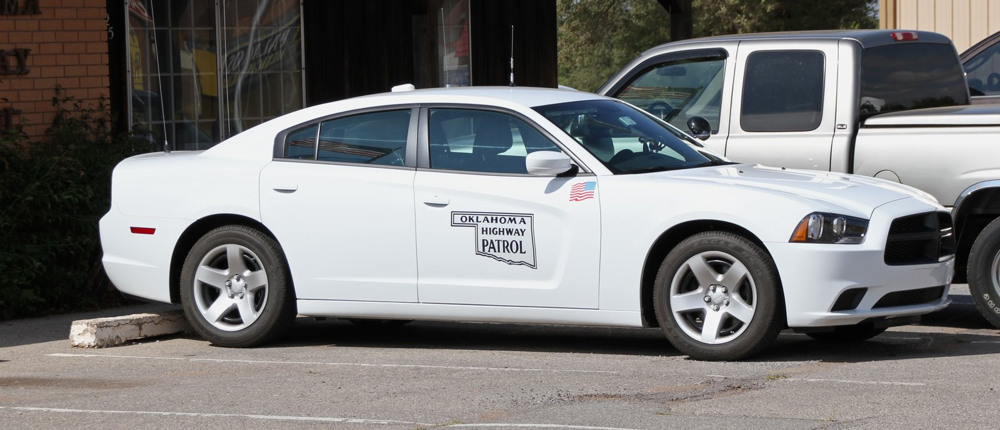

AQShda huquqlaringiz: politsiya yoki immigratsiya xizmati sizni toʻxtatganda
AQSh Konstitutsiyasi har bir odamga — fuqaromi yoki yoʻqmi — jim turish, tintuvga rozilik bermaslik va advokat talab qilish huquqini beradi. Mana politsiya koʻchada, avtomobilda yoki eshik oldida toʻxtatganda bu huquqlar qanday ishlaydi.

AQShda asosiy huquqlar Konstitutsiyaning dastlabki oʻnta tuzatishi — «Huquqlar billi» (Bill of Rights, 1791) bilan kafolatlangan va ular mamlakat hududidagi har bir odamga, immigratsiya maqomidan qatʼi nazar, tegishli. Politsiya bilan har qanday uchrashuvda uchta asosiy huquq bor: jim turish huquqi (5-tuzatish), order (sudya imzolagan ruxsatnoma)siz tintuvga rozilik bermaslik huquqi (4-tuzatish) va hibsga olinsangiz advokatga ega boʻlish huquqi (6-tuzatish). Bu huquqlardan foydalanganingiz uchun jazolanmaysiz (Manba: ACLU — Know Your Rights: Stopped by Police; U.S. Courts — Bill of Rights).
Jim turish huquqi (5-tuzatish)
5-tuzatishga koʻra, hech kim oʻziga qarshi guvohlik berishga majbur qilinmaydi. Siz savollarga javob bermaslik huquqiga egasiz va buni ovoz chiqarib aytishingiz tavsiya etiladi: «Men jim turish huquqimdan foydalanaman». Baʼzi shtatlarda, agar sizni rasman ushlab turishsa (detained), oʻzingizni tanishtirish — ism-sharifingizni aytish talab qilinishi mumkin, biroq boshqa savollarga javob berish shart emas. Hibsga olinganlar so'roq qilinishidan oldin politsiya ularni huquqlari haqida ogohlantirishi shart — bu «Miranda ogohlantirishi» deb ataladi (Manba: ACLU — Stopped by Police; FindLaw — Rights During a Police Stop).
Tintuvga rozilik bermaslik huquqi (4-tuzatish)
4-tuzatish asossiz tintuv va ushlab turishdan himoya qiladi. Siz oʻzingiz, avtomobilingiz yoki uyingizni tintuv qilishga rozilik bermaslik huquqiga egasiz; buni aniq ayting: «Men tintuvga rozilik bermayman». Biroq rozilikni rad etish har doim ham tintuvni toʻxtatmaydi: agar politsiyada jinoyat dalili borligiga asosli shubha (probable cause) boʻlsa, avtomobil rozilik boʻlmasa ham tintilishi mumkin. Koʻchada toʻxtatilganda politsiya qurol borligiga asosli shubha qilsa, ustki kiyimingizni paypaslab koʻrishi (frisk) mumkin. Uyga kirish uchun esa, odatda, sudya imzolagan order kerak (Manba: ACLU — Stopped by Police; FindLaw).

Avtomobilda toʻxtatilganda
Yoʻl-transport nazorati (traffic stop)da haydovchi haydovchilik guvohnomasi, avtomobil roʻyxati (registration) va sugʻurta hujjatini koʻrsatishi talab etiladi. Avtomobilni toʻxtating, ichki chiroqni yoqing, qoʻllaringizni rulda — koʻrinadigan joyda ushlang va keskin harakat qilmang. Yoʻlovchilar ham jim turish huquqiga ega va «Men ketishim mumkinmi?» deb soʻrashi mumkin. Agar javob «ha» boʻlsa, tinch ketishingiz mumkin; agar ushlab turilsangiz yoki hibsga olinsangiz, advokat soʻrang va jim turing (Manba: FindLaw — Rights During a Traffic Stop; ACLU).
Immigratsiya xizmati (ICE) kelganda
Immigratsiya maqomingiz haqida jim turish huquqiga egasiz. Agentlar uyingizga kelsa, eshikni ochishga majbur emassiz — ular faqat sudya imzolagan order (judicial warrant) koʻrsatgandagina kirishga haqli; ICEning oʻz maʼmuriy orderi (administrative warrant) eshik ochishga asos boʻlmaydi. Hujjatni advokatingizsiz imzolamang va yolgʻon hujjat koʻrsatmang. Agar immigratsiya hujjatlaringiz boʻlsa va 18 yoshdan oshgan boʻlsangiz, ularni oʻzingiz bilan olib yuring; begona davlat fuqarosi ekanligingiz haqida yolgʻon maʼlumot bermang (Manba: ACLU — Know Your Rights: Immigrants' Rights; FindLaw).
Asosiy xavfsizlik qoidalari
Barcha huquqshunoslik manbalari bir xil amaliy maslahatni beradi: politsiyaga qarshilik koʻrsatmang, qochmang va toʻsqinlik qilmang — hatto oʻzingizni aybsiz deb hisoblasangiz yoki huquqlaringiz buzilayotgan boʻlsa ham. Qoʻllaringizni koʻrinadigan joyda ushlang, tortishib ketmang. Politsiyaning jamoat joyida ish faoliyatini tasvirga olish huquqi bor, biroq ularning ishiga xalaqit bermang. Agar huquqlaringiz buzilgan deb hisoblasangiz, agentlarning ism va nishon raqamlarini eslab qoling, guvohlar maʼlumotini yozib oling va keyinroq rasmiy shikoyat qiling (Manba: ACLU — Stopped by Police; FindLaw).
Yordam qayerdan olinadi
Hibsga olinsangiz, advokat talab qilish va advokat kelguniga qadar jim turish huquqingiz bor; agar advokat yollashga mablagʻingiz boʻlmasa, davlat tomonidan tayinlangan bepul himoyachi (public defender) beriladi. Fuqarolik huquqlari boʻyicha tashkilotlar — masalan, Amerika fuqarolik erkinliklari ittifoqi (ACLU) va Amerika advokatlar assotsiatsiyasi (ABA) — shikoyat berish va politsiya qonunbuzarligi boʻyicha advokat topishda yoʻnaltirib yuboradi. Bu maʼlumot umumiy xususiyatga ega va yuridik maslahat oʻrnini bosmaydi; aniq holatda litsenziyalangan advokatga murojaat qiling (Manba: ACLU; FindLaw).